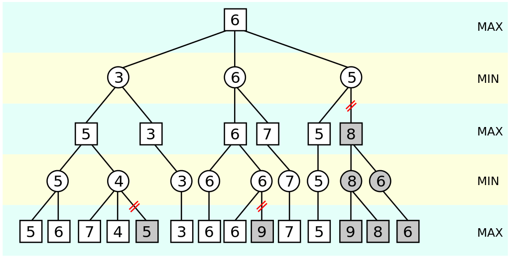
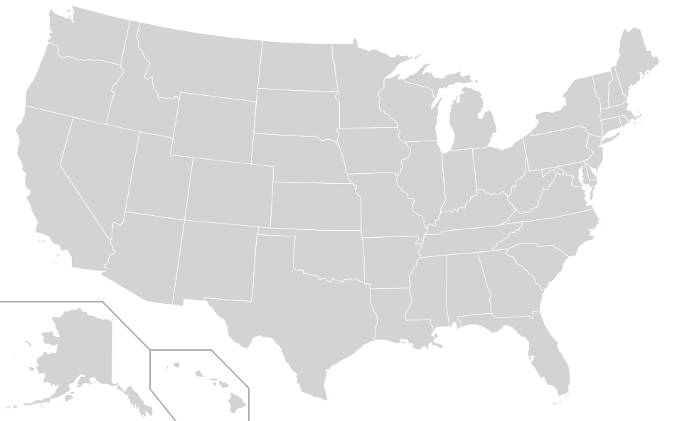
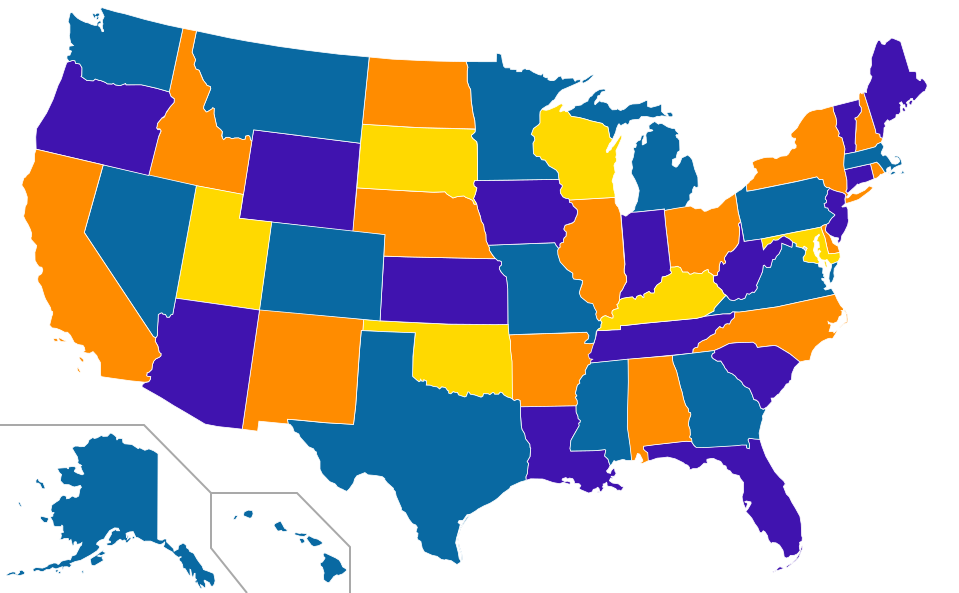
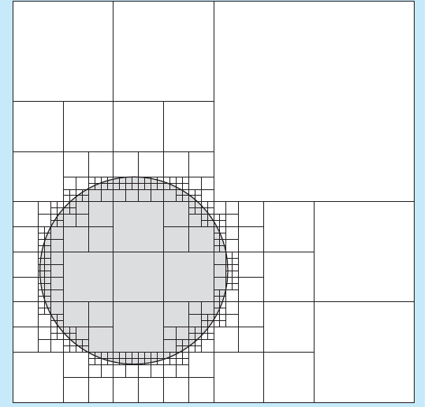

Thinking with Laziness
Tikhon Jelvis (tikhon@jelv.is)
Press → key to advance.
Zoom in/out: Ctrl or Command + +/-
1 Perspectives
- modularity
- evaluation vs definition
- control
- lazy structures as control flow
- precision
- arbitrary precision values
- memoization
- laziness = built-in memoization
2 Modularity
- separate evaluation from definition
- evaluate at use site
- different use sites—different evaluation
- new way of separating into components
- interleave or modify evaluation at use site
3 Preserving Asymptotics
- select n top elements
select ∷ Ord o ⇒ [o] → [o] select = take n . sort
- does not sort whole list
- like adding
breakinto definition ofsort
4 Control Execution
- F18A emulator:
step ∷ State → State trace ∷ State → [State] trace = iterate step
- infinite list of states
5 Different Uses
- repl: run until end state
takeWhile (≠ end) $ trace start
- tests:
take limit $ trace start
- limit based on spec program
- both:
take limit . takeWhile (≠ end)
6 α-β pruning

- don't evaluate pruned branches
7 Control Structures
- lazy data structure ≡ control flow
- list ≡ for loop
- first-class
- manipulate
- pass into functions
- pattern match
- compose
- combine into larger lazy structures
- manipulate
8 Examples
- F18a trace
- interpreter loop
- game tree
- recursive move function
take n . sort- loop
- partially executed sort
9 Intermediate Structures
- lazy structures need not fully exist
- garbage collected on the fly
fact n = product [1..n]- internal list ⇒ for loop
- collected on the fly
- constant memory usage
- common style:
fold . unfold
10 Nondeterministic Programming
- lists ≡ loop
- nest list ≡ nested loop
- monad instance!
- nondeterministic programming
do a ← [1..10] b ← [1..10] guard (a ≠ b ∧ a + b == 7) return (a, b)
11 Map Coloring

12 Map Coloring

13 Map Coloring
step ∷ Map → State → [Map]
solutions ∷ [Map] solutions = foldM step blank states first = head solutions -- solution where California is blue some = find caBlue solution all = filter caBlue solution
14 Arbitrary Precision
- lazy structures ⇒ precision on demand
- Conal Elliott:
approximations compose badly
- modularity!
- vector vs raster
15 Exact Real Arithmetic
- lazy list of digits
- continued fractions
- any other series
N [3] [1, 4, 1, 5, 9, 2, 6...]
- simple implement
- no loss of precision at seams
16 Infinite Quadtrees

17 Memoization
- built-in controlled side-effect
- below level of abstraction
- laziness:
- computes value at most once
- deterministic
- thread-safe
18 Fibonacci
- classic example
fibs ∷ [Integer] fibs = 0 : 1 : zipWith (+) fibs (drop 1 fibs)
19 Fibonacci
20 Intermediate Values
fib ∷ Integer → Integer
fib n = fibs !! n
where fibs =
0 : 1 : zipWith (+) fibs (drop 1 fibs)
-
21 Intermediate Values
22 Packages
- Luke Palmer:
data-memocombinators - Conal Elliott:
MemoTrie - infinite lazy trees
23 Dynamic Programming
- array of lazy values
fib ∷ Integer → Integer
fib 0 = 0
fib 1 = 1
fib n = fibs ! (n - 1) + fibs ! (n - 2)
where
fibs = Array (0, n) [go i | i ← [0..n]]
24 Dynamic Programming
- array with dependencies as thunks
- interesting for harder problems!
25 Perspectives
- modularity
- evaluation vs definition
- control
- lazy structures as control flow
- precision
- arbitrary precision values
- memoization
- laziness = built-in memoization
26 References
- “Why Functional Programming Matters” by John Hughes
- Parallel and Concurrent Programming in Haskell by Simon Marlowe
- “Lazy Algorithms for Exact Real Arithmetic” by Pietro Di Gianantonio and Pier Luca Lanzi
- “Functional Programming and Quadtrees” by F. Warren Burton and John (Yannis) G. Kollias
27 References
- data-memocombinators
- elegant memoization with memo tries
- Lazy Dynamic Programming
- thanks:
- Conal Elliott
- Edward Kmett